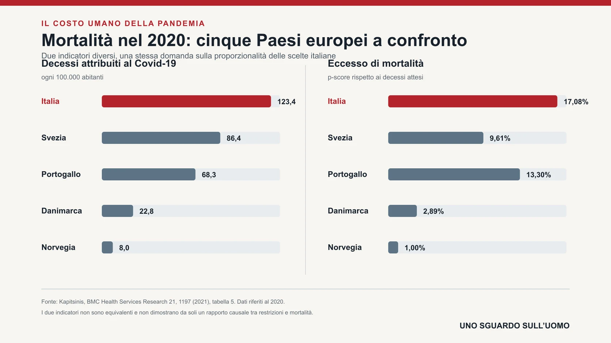

Giuseppe Conte è arrivato davanti alla Commissione Covid conoscendone da quasi due anni persone, regole, testimonianze e direzione. Aveva dichiarato di non temere le domande più scomode. Poi Galeazzo Bignami ha fatto partire il video in cui, il 27 gennaio 2020, l’allora presidente del Consiglio assicurava che l’Italia fosse «prontissima». Da quel momento l’audizione ha cambiato natura: non perché fosse diventata un interrogatorio, ma perché Conte ha cominciato a comportarsi come un accusato.
In questo dossier
- La domanda che ha incrinato l’audizione
- Prontissimi a dichiarare l’emergenza non significa pronti ad affrontarla
- Il solco tracciato dal governo Conte
- Arcuri e la macchina economica dell’emergenza
- Il vaccino e la promessa di una libertà condizionata
- Draghi non cambia strada la allarga
- I sacrifici e i risultati
- Dal governo alla Commissione che indagava sul governo
- Il conflitto previsto dalla legge e lasciato senza conseguenze
- Il vantaggio di conoscere l’inchiesta dall’interno
- La variante Bignami
- Il controllato tra i controllori
- La responsabilità che resta
- Fonti
Il 23 novembre 2026 non si celebrava un processo. Conte non era un imputato e i commissari non erano pubblici ministeri. Era un’audizione parlamentare, lunga e inevitabilmente politica, dedicata alle decisioni che segnarono la vita di milioni di persone. Eppure fu proprio l’ex presidente del Consiglio a trasformare molte domande in accuse personali, molte contestazioni in diffamazioni e la ricostruzione dei fatti in un presunto tentativo di mandarlo sul banco degli imputati.
Quella reazione è il punto di partenza, non la conclusione. Per capire che cosa Conte sentisse di dover difendere bisogna tornare al principio, ricostruire la strada aperta dal suo governo, seguire il modo in cui Mario Draghi la percorse e la irrigidì, confrontare i sacrifici imposti con i risultati sanitari e, infine, domandarsi perché l’uomo maggiormente identificato con la prima gestione della pandemia volle sedere personalmente nella Commissione incaricata di esaminarla.
La domanda che ha incrinato l’audizione
Bignami non cominciò dai contratti né dalle inchieste giudiziarie. Cominciò dalle famiglie delle vittime e da una frase rimasta nella memoria pubblica. Fece proiettare l’intervento di Conte a Otto e mezzo del 27 gennaio 2020: alla domanda se l’Italia fosse pronta ad affrontare il nuovo coronavirus, il presidente del Consiglio rispose «siamo prontissimi».
La domanda successiva era semplice: perché rassicurare il Paese in quel modo quando mancavano dispositivi di protezione, il piano pandemico non era stato aggiornato e il sistema sanitario avrebbe mostrato nel giro di poche settimane carenze drammatiche? Bignami precisò di non voler sostenere che Conte avesse rassicurato gli italiani con l’intenzione di mandarli a morire. Conte rispose spiegando che «prontissimi» significava non essere rimasti con le mani in mano e ricordò la dichiarazione dello stato di emergenza del 31 gennaio.
Poi, però, reagì a una frase che Bignami aveva appena escluso: «Come si permette di dire che ho rassicurato gli italiani per mandarli a morire?». È qui che la tecnica dell’avvocato si trasformò nella postura dell’imputato. Spostare il confronto dalla correttezza di una rassicurazione pubblica all’ipotesi estrema di una volontà omicida consentiva di respingere come mostruosa un’accusa che non era stata formulata. Ma lasciava intatta la domanda reale: l’Italia era davvero pronta?
Sia chiaro, non voglio dire che lei ha voluto rassicurare mandando gli italiani a morire, ma sento il dovere di chiedere per quale motivo abbia ritenuto di dire che eravamo prontissimi
Galeazzo Bignami, Commissione Covid, 23 novembre 2026
Prontissimi a dichiarare l’emergenza non significa pronti ad affrontarla
Conte rivendica un fatto: il 31 gennaio 2020 l’Italia dichiarò lo stato di emergenza, il giorno successivo alla dichiarazione dell’Organizzazione mondiale della sanità. È un atto tempestivo e non può essere cancellato. Ma una dichiarazione formale non coincide con la preparazione concreta. Serve ad attivare poteri straordinari; non crea da sola mascherine, terapie intensive, scorte, protocolli territoriali e catene di comando già collaudate.
Il piano pandemico nazionale risaliva al 2006. Sulla sua mancata attivazione e sul suo mancato aggiornamento si sono sovrapposte responsabilità ministeriali, tecniche e politiche che attraversano più governi. Conte ereditò quella fragilità, non la inventò. Ma quando parlò agli italiani non disse che il Paese stava correndo per colmare ritardi accumulati. Disse che era prontissimo. La comunicazione scelse la sicurezza proprio mentre l’apparato avrebbe presto mostrato di non averne.
La distinzione è decisiva. Nessun governo avrebbe potuto prevedere ogni caratteristica di un virus nuovo. Un governo può però essere giudicato per ciò che sapeva, per ciò che dichiarò e per il rapporto tra le due cose. La frase del 27 gennaio non è una prova di colpa. È il primo fotogramma di un metodo comunicativo: rassicurare, rivendicare tempestività e presentare le decisioni successive come le uniche possibili.
Il solco tracciato dal governo Conte
Tra febbraio e marzo 2020 l’emergenza travolse ogni previsione. Il governo istituì le prime zone rosse, estese progressivamente le limitazioni e il 9 marzo portò il lockdown all’intero territorio nazionale. Furono chiuse attività economiche, scuole e luoghi di incontro; vennero limitati gli spostamenti e compressi diritti che, fino a poche settimane prima, nessun italiano avrebbe immaginato di dover giustificare con un’autocertificazione.
La necessità di intervenire non cancella la portata del precedente. Attraverso decreti-legge, ordinanze e una lunga serie di decreti del Presidente del Consiglio dei ministri, l’esecutivo costruì un sistema nel quale la libertà quotidiana dipendeva dal colore assegnato a un territorio, dall’orario, dal motivo dello spostamento e dall’attività che si intendeva svolgere. Il Parlamento convertì i decreti e la Corte costituzionale avrebbe successivamente delimitato e riconosciuto parti di quell’impianto. Sul piano politico, però, il modello nacque allora.
La gestione non riguardò soltanto la salute. Determinò chi poteva lavorare, incontrare i propri familiari, celebrare un funerale, aprire un negozio o attraversare il confine di un comune. A Natale 2020 il decreto-legge n. 172 alternò giorni rossi e arancioni e restrinse ulteriormente gli spostamenti. Il messaggio era ormai consolidato: la protezione sanitaria giustificava un’amministrazione capillare delle relazioni sociali.
Questa è la strada segnata da Conte. Non perché tutte le misure successive fossero già scritte nel marzo 2020, ma perché allora furono fissati quattro principi: l’emergenza come fonte di poteri eccezionali; la limitazione generalizzata come strumento ordinario di risposta; la differenziazione dei cittadini e dei territori in base al rischio; la promessa che il sacrificio presente avrebbe restituito libertà futura.
Arcuri e la macchina economica dell’emergenza
Il 18 marzo 2020 Conte nominò Domenico Arcuri commissario straordinario per l’emergenza. L’articolo 122 del decreto-legge Cura Italia gli attribuiva poteri ampi, compresa la possibilità di operare in deroga alle procedure ordinarie. L’urgenza rendeva inevitabile accelerare; proprio per questo la scelta delle persone, dei controlli e delle filiere diventava una responsabilità politica ancora maggiore.
La maxi fornitura di mascherine dalla Cina ha concentrato negli anni sospetti, processi e narrazioni contrapposte. Gli affidamenti esaminati valevano circa 1,25 miliardi di euro e riguardavano oltre 800 milioni di dispositivi. Nel gennaio 2025 Arcuri è stato assolto e nel marzo 2026 il tribunale di Roma ha prosciolto anche il suo ex collaboratore Antonio Fabbrocini e i mediatori italiani coinvolti. Questi esiti devono essere scritti con la stessa evidenza riservata alle accuse.
L’assoluzione penale, tuttavia, non chiude il giudizio sull’architettura amministrativa. Stabilisce che le contestazioni non hanno prodotto una condanna; non dimostra che ogni scelta fosse economicamente ottimale né sottrae il governo alla domanda su prezzi, intermediari, verifiche e qualità dei dispositivi. Conte nominò Arcuri e gli affidò una struttura eccezionale. La responsabilità politica consiste anche nel spiegare perché quella struttura fosse la migliore possibile e come ne furono controllati i risultati.
Durante l’audizione è tornato anche il nome dell’avvocato Luca Di Donna, legato professionalmente allo studio del professor Guido Alpa frequentato da Conte. In Commissione sono state riferite accuse su attività di intermediazione e rapporti con imprese interessate alle commesse pubbliche. Conte ha negato di aver favorito affari o di aver svolto un ruolo improprio. Gli elementi pubblicamente richiamati non consentono di attribuirgli una partecipazione a un sistema illecito. Consentono però di chiedere perché relazioni nate nell’ambiente professionale vicino all’allora presidente del Consiglio ricompaiano nei racconti degli imprenditori durante l’emergenza.
Il vaccino e la promessa di una libertà condizionata
Il governo Conte predispose anche l’avvio della campagna vaccinale. Il piano strategico fu presentato da Roberto Speranza al Parlamento il 2 dicembre 2020 e approvato nelle sue linee guida il 15 dicembre. Il 27 dicembre partì il Vaccine Day europeo. La vaccinazione veniva indicata come la via d’uscita sanitaria, economica e sociale dalla pandemia.
In quella fase il Green Pass non esisteva ancora nella forma che avrebbe assunto sotto Draghi. Ma era già presente l’idea politica che la vaccinazione avrebbe determinato una maggiore possibilità di movimento e di relazione. Il punto non è attribuire retroattivamente a Conte ogni norma successiva. È riconoscere che il passaggio dalla protezione collettiva alla libertà differenziata non nacque all’improvviso nell’estate 2021: trovò terreno in una comunicazione costruita durante il suo governo.
La distinzione tra riduzione della malattia grave e blocco del contagio sarebbe diventata centrale con l’evoluzione delle varianti e dei dati. Nel dibattito pubblico, però, la certificazione venne presentata a lungo come strumento di sicurezza e libertà. La complessità scientifica fu compressa in una formula politica molto più semplice: chi aderiva alla strategia vaccinale avrebbe potuto recuperare prima gli spazi perduti.
Draghi non cambia strada la allarga
Il 13 febbraio 2021 Mario Draghi sostituì Conte a Palazzo Chigi. Cambiarono presidente del Consiglio, commissario straordinario e stile comunicativo. Non cambiò il ministro della Salute: Roberto Speranza rimase al proprio posto. Non cambiò neppure l’impianto fondamentale dell’emergenza. Proseguirono zone a colori, limitazioni, campagna vaccinale e poteri straordinari.
Il governo Draghi introdusse la certificazione verde, la estese progressivamente e con il decreto-legge n. 127 del settembre 2021 la rese necessaria per accedere ai luoghi di lavoro pubblici e privati. Chi ne era privo veniva considerato assente ingiustificato e perdeva la retribuzione. A novembre arrivò il Green Pass rafforzato, riservato a vaccinati e guariti per molte attività; a fine dicembre l’obbligo fu ampliato ai trasporti, alla ristorazione e ad altri ambiti della vita quotidiana.
Questa fu un’intensificazione, non una rottura. Il solco aperto da Conte diventò una strada più larga e più selettiva. La libertà non dipendeva più soltanto dalla situazione epidemiologica del territorio, ma anche dallo status sanitario individuale. L’emergenza, dichiarata dal governo Conte, fu prorogata fino al 31 marzo 2022.
Conte non era più presidente del Consiglio, ma guidava il Movimento 5 Stelle, una delle forze determinanti della maggioranza Draghi. Il 7 dicembre 2021 dichiarò di non ritenere necessario l’obbligo vaccinale generalizzato e, nello stesso tempo, di essere favorevole al Super Green Pass. Sostenne la proroga dello stato di emergenza e solo nella fase finale iniziò a chiedere l’allentamento di alcune misure, in particolare sul lavoro. Non può quindi appropriarsi dei meriti della continuità e attribuirne i costi esclusivamente a Draghi.
Su smartphone, scorri la tabella orizzontalmente.
| Data | Governo | Passaggio |
|---|---|---|
| 31 gennaio 2020 | Conte | Dichiarazione dello stato di emergenza |
| 9 marzo 2020 | Conte | Lockdown esteso all’intero territorio nazionale |
| 18 marzo 2020 | Conte | Nomina di Domenico Arcuri e poteri commissariali |
| 18 dicembre 2020 | Conte | Restrizioni natalizie con alternanza di zone rosse e arancioni |
| 27 dicembre 2020 | Conte | Avvio della campagna vaccinale |
| 22 luglio 2021 | Draghi | Estensione dell’uso della certificazione verde |
| 16 settembre 2021 | Draghi | Green Pass obbligatorio nei luoghi di lavoro |
| 24 novembre 2021 | Draghi | Introduzione del Green Pass rafforzato |
| 29 dicembre 2021 | Draghi | Ulteriore estensione del Green Pass rafforzato |
I sacrifici e i risultati
La severità di una misura non può essere valutata soltanto dalle intenzioni. Deve essere confrontata con i risultati, con i costi prodotti e con le alternative disponibili. L’Italia sopportò una delle compressioni sociali ed economiche più profonde d’Europa. Questo non significa che ogni restrizione fosse inutile. Significa che chi la impose deve dimostrarne necessità, proporzionalità ed efficacia.
Uno studio pubblicato nel 2021 da Sotiris Kapitsinis ha confrontato l’eccesso di mortalità e i decessi attribuiti al Covid nel 2020. Tra i cinque Paesi selezionati per questa analisi, l’Italia registrò 123,4 decessi Covid ogni 100.000 abitanti e un eccesso di mortalità del 17,08 per cento. La Svezia si fermò rispettivamente a 86,4 e 9,61 per cento; il Portogallo a 68,3 e 13,30; la Danimarca a 22,8 e 2,89; la Norvegia a 8 e 1 per cento.

I due indicatori non sono equivalenti. I decessi attribuiti al Covid dipendono anche dai criteri di classificazione; l’eccesso di mortalità confronta tutti i decessi osservati con quelli attesi. Neppure la distanza tra i Paesi dimostra che il lockdown abbia causato più morti. Demografia, diffusione iniziale, struttura sanitaria, densità, medicina territoriale, tempi delle ondate e comportamento spontaneo della popolazione impediscono conclusioni automatiche.
Ma quei dati vietano anche l’autocompiacimento. Un Paese che ha imposto restrizioni più invasive di altri non può considerare la severità una prova della propria efficacia. Deve spiegare perché, nonostante i sacrifici, la mortalità sia rimasta così alta e quali valutazioni successive siano state compiute per stabilire se le misure avessero prodotto i benefici attesi.
Dal governo alla Commissione che indagava sul governo
La storia avrebbe già un peso enorme se terminasse qui. Invece il 17 settembre 2024 Giuseppe Conte entrò nella Commissione parlamentare d’inchiesta sulla gestione dell’emergenza Covid, insieme ad Alfonso Colucci, in sostituzione dei deputati Francesco Silvestri e Vittoria Baldino. Non era un parlamentare scelto per riempire casualmente una casella. Era il presidente del Movimento 5 Stelle ed era stato presidente del Consiglio durante la fase che occupava una parte centrale dell’inchiesta.
Gli altri principali leader nazionali non sedevano personalmente nell’organismo. La rappresentanza del Movimento 5 Stelle poteva essere assicurata da un altro deputato, come sarebbe accaduto dopo le dimissioni di Conte. Presentare quella presenza come una scelta puramente passiva significa attribuire al leader del partito un’irrilevanza politica poco credibile.
Conte conosceva perfettamente il proprio interesse personale. Prima e dopo l’ingresso definì la Commissione un «plotone d’esecuzione» costruito per colpire lui, Speranza e la squadra di governo. Eppure accettò il posto. Se riteneva l’organismo una macchina politica contro di sé, perché volle osservarla e parteciparvi dall’interno?
Il conflitto previsto dalla legge e lasciato senza conseguenze
La legge n. 22 del 2024 non ignora il problema. L’articolo 2 impone a ogni componente di dichiarare entro dieci giorni eventuali situazioni di conflitto d’interessi in relazione all’oggetto dell’inchiesta. La norma, tuttavia, non definisce una procedura pubblica di valutazione, non stabilisce un obbligo generale di astensione e non prevede una sanzione specifica in caso di omissione. Chiede trasparenza, ma non costruisce un vero rimedio.
Nel materiale pubblico esaminato non compare il contenuto della dichiarazione presentata da Conte dopo la nomina. È una lacuna che la Presidenza della Camera dovrebbe colmare: dichiarò la propria posizione di ex presidente del Consiglio come conflitto? Dichiarò di non ravvisarne alcuno? Furono adottate limitazioni? Senza quella carta, il meccanismo previsto dalla legge resta una formula priva di verifica pubblica.
Il 15 ottobre 2024 la sovrapposizione era già evidente. Conte si disse disponibile a essere ascoltato, ma dichiarò di non voler rinunciare al ruolo di commissario. Quando Lisei prospettò le dimissioni come soluzione, Conte rispose che non si sarebbe dimesso senza rassicurazioni sulla possibilità di riacquistare successivamente lo status di componente. Non stava soltanto chiedendo di parlare. Stava difendendo il diritto a rimanere dentro l’inchiesta anche dopo esserne diventato formalmente uno degli auditi.
Non intende dimettersi in assenza di rassicurazioni sulla possibilità di riacquisire successivamente lo status di componente della Commissione
Resoconto parlamentare del 15 ottobre 2024
Il vantaggio di conoscere l’inchiesta dall’interno
Il regolamento interno dispone che gli atti depositati nell’archivio possano essere consultati dai commissari. Per gli atti segreti o riservati sono previste autorizzazioni annotate in un registro. Un componente conosce inoltre la programmazione, assiste alle testimonianze, ascolta le domande, vede emergere le contraddizioni e comprende quali filoni stanno acquistando importanza.
Non è necessario sostenere che Conte abbia sottratto documenti o violato un segreto. Non esiste, nel materiale acquisito, la prova di un uso illecito. Il punto è più semplice e più grave sul piano istituzionale: l’uomo destinato a rispondere delle decisioni del proprio governo disponeva delle prerogative informative dell’organismo che avrebbe dovuto ascoltarlo.
Conte non rimase un componente nominale. Intervenne nelle sedute, partecipò alla discussione del regolamento e assistette ad audizioni che riguardavano la gestione del suo esecutivo. Il 28 luglio 2026 era ancora commissario quando Domenico Arcuri venne sottoposto a esame testimoniale. Il 3 agosto Conte si dimise. Il 6 agosto, appena tre giorni dopo, si sedette dall’altra parte del tavolo per la prima parte della propria audizione.
Tra la nomina del 17 settembre 2024 e le dimissioni trascorsero 685 giorni. Durante quel periodo Conte poté seguire dall’interno la formazione del quadro che lo avrebbe riguardato. Nessun altro normale audito dispone di un simile anticipo. La domanda non è se abbia studiato per difendersi: la domanda è perché l’ordinamento gli abbia consentito di accumulare quel vantaggio prima di essere ascoltato.
La variante Bignami
Il 23 novembre Conte appariva convinto di poter governare il ritmo dell’audizione. Aveva esperienza istituzionale, formazione giuridica e una naturale capacità di costruire interventi lunghi. Ma Bignami scelse un terreno diverso: domande strette, sequenze temporali, filmati e contraddizioni tra parole pronunciate allora e spiegazioni offerte oggi.
Non fu un interrogatorio e Bignami non era un magistrato. Proprio per questo la reazione di Conte è significativa. Invece di limitarsi a rispondere, contestò ripetutamente il metodo, le intenzioni della maggioranza e la legittimità morale degli interlocutori. Rivendicò le responsabilità regionali escluse dal perimetro della Commissione, argomento serio che merita risposta, ma lo utilizzò anche per ricondurre le domande rivolte al suo governo a una persecuzione politica.
Quando accusò gli esponenti di Fratelli d’Italia di diffamarlo protetti dall’immunità parlamentare, Bignami trasformò la sfida retorica in un’offerta concreta e politicamente brutale: dimettersi entrambi da deputati e affrontarsi in tribunale. Conte rifiutò definendo la proposta una «baggianata» e una «pagliacciata». Aveva ragione su un punto: il mandato parlamentare non è un gettone da gettare sul tavolo per vincere una lite. Ma era stato lui a spostare l’audizione sul terreno dell’accusato che pretende il tribunale.
La seduta venne sospesa. Le opposizioni contestarono la gestione di Lisei, i video e i toni; i sostenitori di Conte intervennero più volte sull’ordine dei lavori. Nel finale Lisei denunciò parole intimidatorie e annunciò che avrebbe informato il presidente del Senato Ignazio La Russa. Non fu una pagina di alta istituzione. Fu però una radiografia politica nitida: Conte aveva impostato l’audizione come la prova della propria persecuzione e Bignami lo aveva costretto a vivere fino in fondo il ruolo dell’accusato che egli stesso aveva scelto.
Il controllato tra i controllori
Conte ha diritto a difendere le proprie decisioni e a denunciare un uso politico della Commissione. La maggioranza ha il dovere di non trasformare l’inchiesta in una vendetta retrospettiva. Il perimetro che esclude larga parte della gestione sanitaria regionale indebolisce davvero la completezza dell’indagine. Le contestazioni del mondo scientifico sui metodi della Commissione non possono essere liquidate come rumore ostile.
Nessuna di queste obiezioni cancella però l’anomalia originaria. Chi ritiene una Commissione costruita contro di sé non può entrarvi, conoscerne i lavori per quasi due anni, difendere il proprio posto e poi presentarsi come un cittadino sorpreso dalle domande. La denuncia della persecuzione rende la scelta di partecipare ancora più difficile da spiegare, non meno.
La stessa continuità vale per la gestione della pandemia. Conte non può intestarsi il coraggio delle chiusure del 2020 e prendere le distanze dalle conseguenze politiche del modello; non può rivendicare l’avvio della campagna vaccinale e trattare il sistema delle libertà condizionate costruito da Draghi come una storia estranea; non può sostenere il Super Green Pass e poi descriversi soltanto come il bersaglio di chi oggi chiede conto di quella stagione.
La responsabilità che resta
Questo dossier non stabilisce una responsabilità penale di Giuseppe Conte. Le assoluzioni e i proscioglimenti devono essere rispettati, le accuse non provate non possono diventare fatti e una pandemia mondiale non può essere ridotta alla volontà di un solo uomo. La responsabilità politica segue però un’altra logica: riguarda le decisioni adottate, le alternative scartate, i costi imposti e la capacità di risponderne senza trasformare ogni domanda in un’aggressione.
Conte tracciò il primo solco dell’emergenza italiana. Draghi lo allargò, mantenendo Speranza e irrigidendo la differenziazione tra cittadini; il Movimento 5 Stelle sostenne quel governo e Conte appoggiò passaggi decisivi della strategia. Terminata l’emergenza, lo stesso Conte entrò nella Commissione incaricata di ricostruire quella strada. Quando infine venne ascoltato, conosceva già dall’interno gran parte del percorso investigativo.
È questa la contraddizione che il nervosismo del 23 novembre ha reso visibile. L’avvocato abituato a controllare il racconto si è sentito imputato; il commissario è diventato audito; il leader che denunciava un plotone d’esecuzione ha dovuto spiegare perché avesse scelto di sedervi dentro. Le domande di Bignami non hanno pronunciato una sentenza. Hanno mostrato che, dopo sei anni, la versione autoassolutoria non basta più.
FONTI
- Camera dei deputati, WebTV, Covid audizione Conte, video integrale, 23 novembre 2026.
- Camera dei deputati, Commissione parlamentare di inchiesta Covid, resoconto sommario del seguito dell’audizione di Giuseppe Conte, 23 novembre 2026.
- Camera dei deputati, Commissione parlamentare di inchiesta Covid, resoconto dell’audizione di Giuseppe Conte, 6 agosto 2026.
- Camera dei deputati, Commissione parlamentare di inchiesta Covid, resoconto della seduta, 15 ottobre 2024.
- Camera dei deputati, Resoconto stenografico dell’Assemblea, modifica nella composizione della Commissione Covid, 17 settembre 2024.
- Parlamento italiano, Legge 5 marzo 2024 n. 22, istituzione della Commissione parlamentare d’inchiesta Covid.
- Commissione parlamentare di inchiesta Covid, Regolamento interno, articoli sul regime degli atti e sull’archivio.
- Camera dei deputati, Commissione parlamentare di inchiesta Covid, esame testimoniale di Domenico Arcuri, 28 luglio 2026.
- Camera dei deputati, Commissione parlamentare di inchiesta Covid, discussione del regolamento interno, 2 ottobre 2024.
- Presidenza del Consiglio dei ministri, dichiarazione dello stato di emergenza in conseguenza del rischio sanitario da nuovo coronavirus, 31 gennaio 2020.
- Ministero della Salute, Consiglio straordinario dei ministri vara decreto legge per il contenimento dell’emergenza, 23 febbraio 2020.
- Ministero della Salute, Governo vara piano di rafforzamento del Servizio sanitario nazionale, 7 marzo 2020.
- Presidenza del Consiglio dei ministri, decreto del Presidente del Consiglio dei ministri 9 marzo 2020.
- Decreto legge 17 marzo 2020 n. 18, articolo 122, Commissario straordinario per l’emergenza Covid.
- Presidenza del Consiglio dei ministri, decreto legge 18 dicembre 2020 n. 172, restrizioni per il periodo natalizio.
- Ministero della Salute, Linee guida del piano strategico per la vaccinazione anti SARS-CoV-2, 15 dicembre 2020.
- Ministero della Salute, Vaccine Day avvio della vaccinazione in Italia e in Europa, 27 dicembre 2020.
- Camera dei deputati, attività parlamentare e provvedimenti sull’obbligo di certificazione verde nei luoghi di lavoro, settembre 2021.
- Presidenza del Consiglio dei ministri, Consiglio dei ministri del 29 dicembre 2021, estensione del Green Pass rafforzato.
- ANSA, Vaccini Conte non penso ci siano estremi per obbligo ma sono favorevole al Super Green Pass, 7 dicembre 2021.
- ANSA, Indagine su mascherine Covid prosciolto l’ex braccio destro di Arcuri, 31 marzo 2026.
- ANSA, Scontro Conte FdI in Commissione Covid stop and go dei lavori, 23 novembre 2026.
- Il Foglio, Conte in Commissione Covid non ho mandato italiani a morire poi lo scontro con Bignami, 23 novembre 2026.
- La7, Otto e mezzo, intervista a Giuseppe Conte sulla preparazione italiana al coronavirus, 27 gennaio 2020.
- Sotiris Kapitsinis, The underlying factors of excess mortality in 2020, BMC Health Services Research 21, 1197, 2021.
- Patterns and drivers of excess mortality during the Covid 19 pandemic in 13 Western European countries, European Journal of Epidemiology, 2024.